k-Day 067｜往車站前進
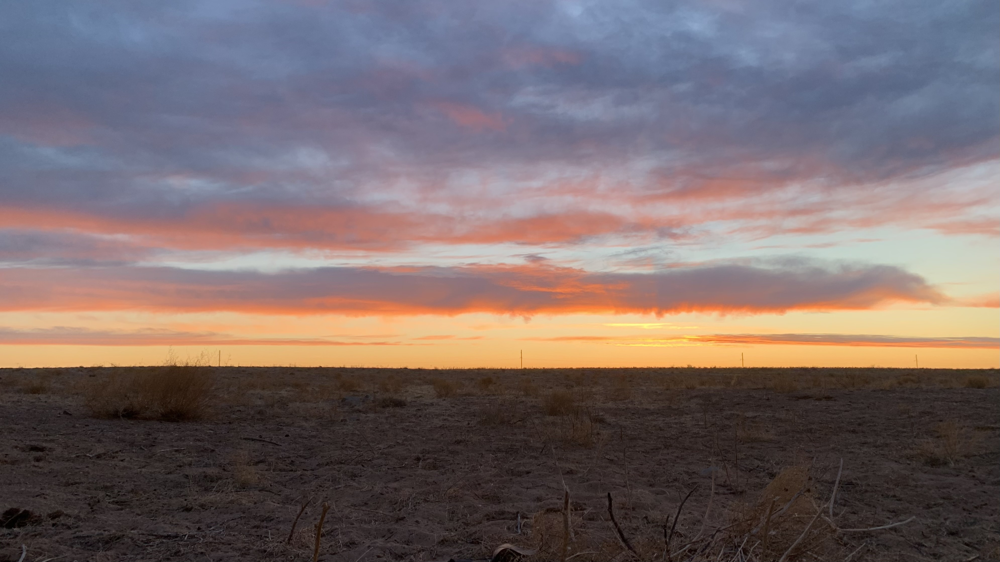
今天早上有些餓，25公里就進城了，此刻的胃可以吃下一頭羊。
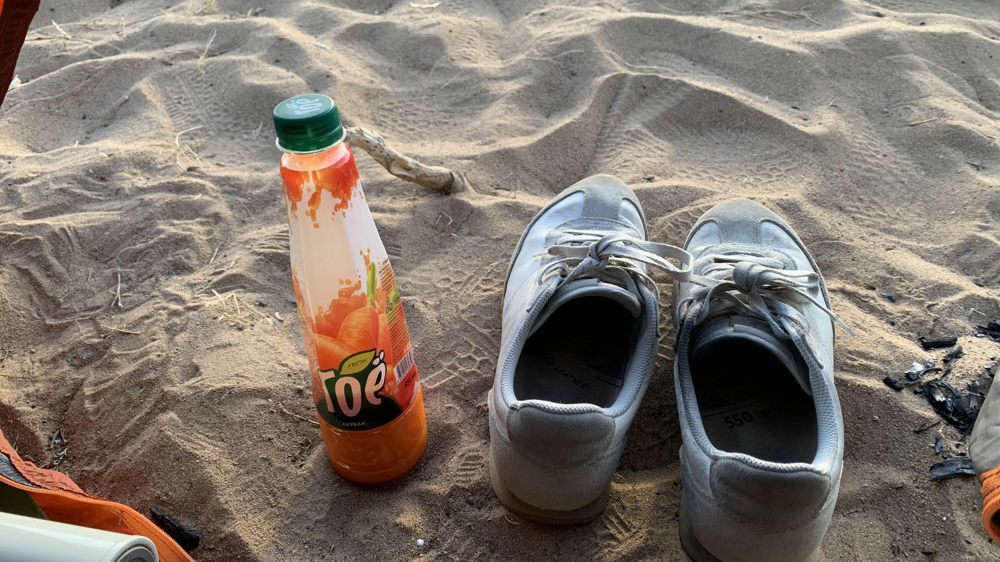
實際上早餐只有蘿蔔汁。Toë蘿蔔汁已經是我的靈魂支柱，很新鮮的口感。喝兩口盯著太陽從草後方升上來，帳篷外的白布鞋已經形成斑駁的顏色。一直沒洗他是因為上面沾了日本的雨雪、韓國的黃土、中國的泥坑，現在踩在蒙古的黃沙上。
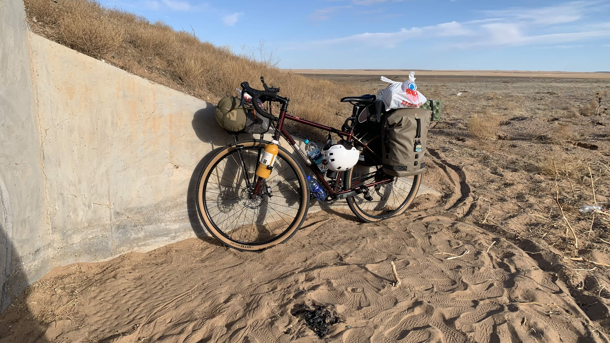
露宿期間一直都維持著營地的整潔，每天出發前會檢查是否有遺落的垃圾，確認收拾乾淨才出發。
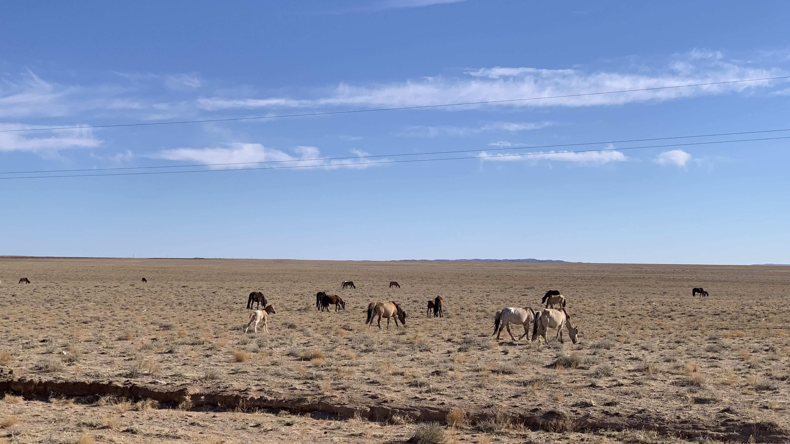
很想跟這些馬做朋友，可是一旦停下來他們就會害怕地往遠處跑。
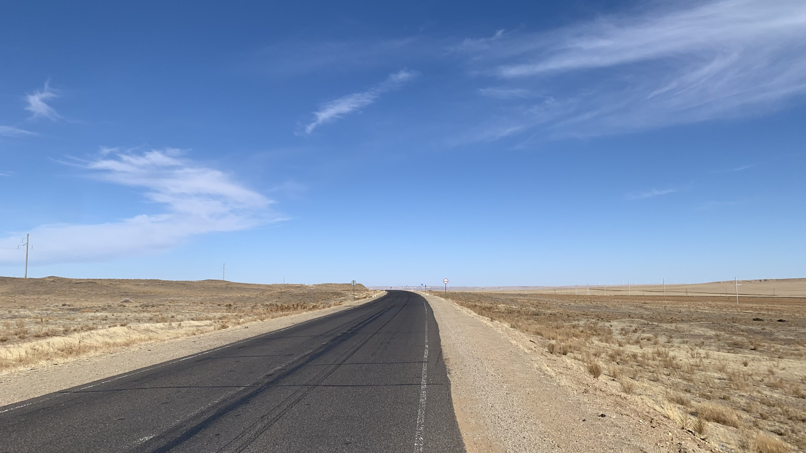
其實蒙古的柏油路並沒有傳說中的那麼差，確實路面偶爾有些坑洞，但也不致於造成騎行上的困難。這樣的風景，加上卡車司機的加油喇叭和揮手致意，一早的騎乘心情就相當愉悅。
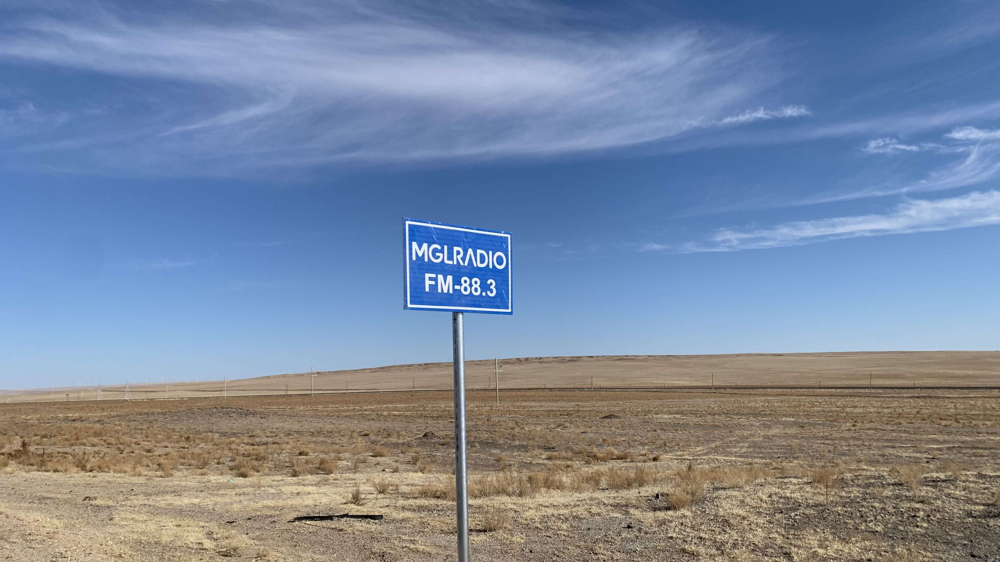
不確定有沒有人需要，蒙古的道路廣播是FM-88.3。
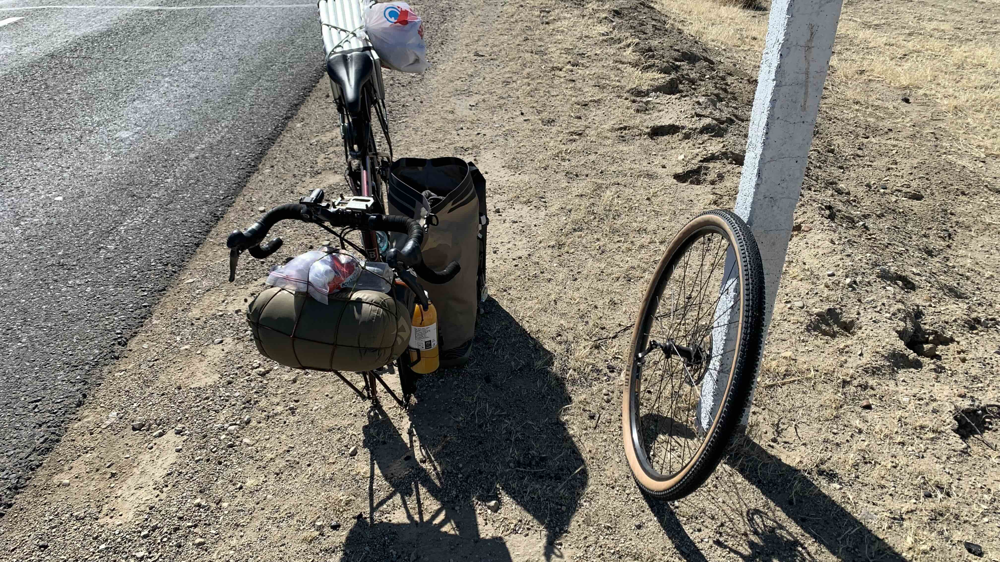
就在上上一張照片的上坡後，迎來長下坡，往下滑的途中發現鞋帶掉了，把車推到柱子旁邊靠穩。綁好鞋帶剛要推車就看到前輪已經沒氣了。
我再也不稱讚任何地方的路況了。即使在腦中自言自語也不行。天氣越來越熱，手忙腳亂拆下外胎，檢查有沒有碎片掉在裡面，重新塞回內胎，又拼命地把外胎卡回去。期間大卡車的風不斷掃到臉上。
裝上輪胎重新上路，實在太餓，已經失去踩踏板的力氣。
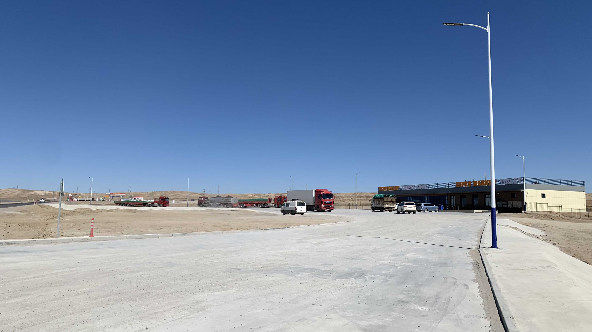
轉進離我最近的一間超市。裡面的客人大部分是卡車司機，也許是新開張，內裝和外觀都相當乾淨。
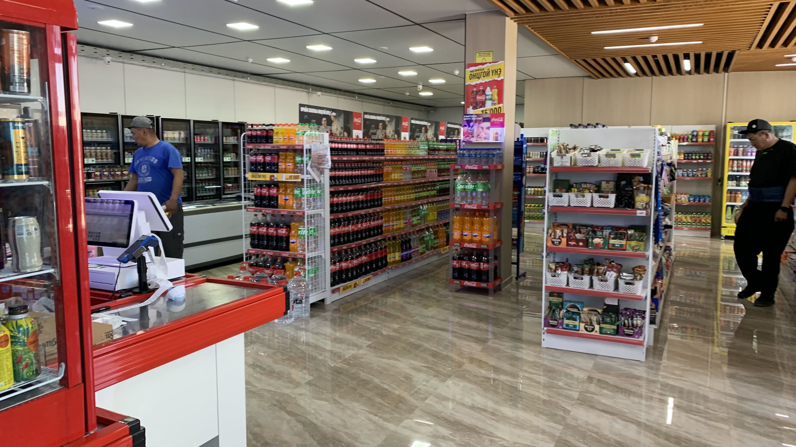
超市貨品齊全，買了一隻被海關沒收已久的小刀和蘿蔔汁，剩下的吃完午飯再來選購。
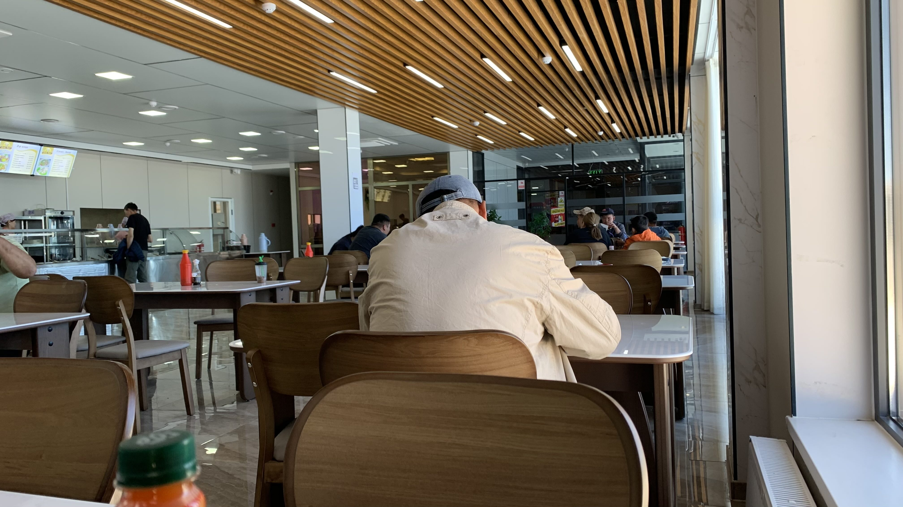
餐廳也很新穎，不確定點餐方式，但是走到照片左邊有個像自助餐台的地方，指著豬肉，餐台後的服務員就讓我去收銀台結帳了。
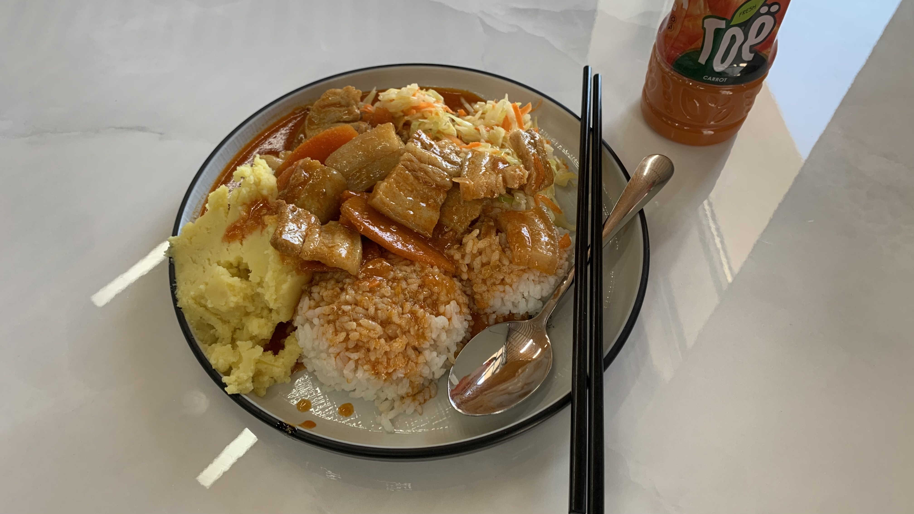
獲得餐點如上，22000元，還是不要換算成台幣比較不會心疼。五花肉很好吃，醬汁和酸菜相當開胃，馬鈴薯泥也是調味過的，不到十分鐘全數掃光。
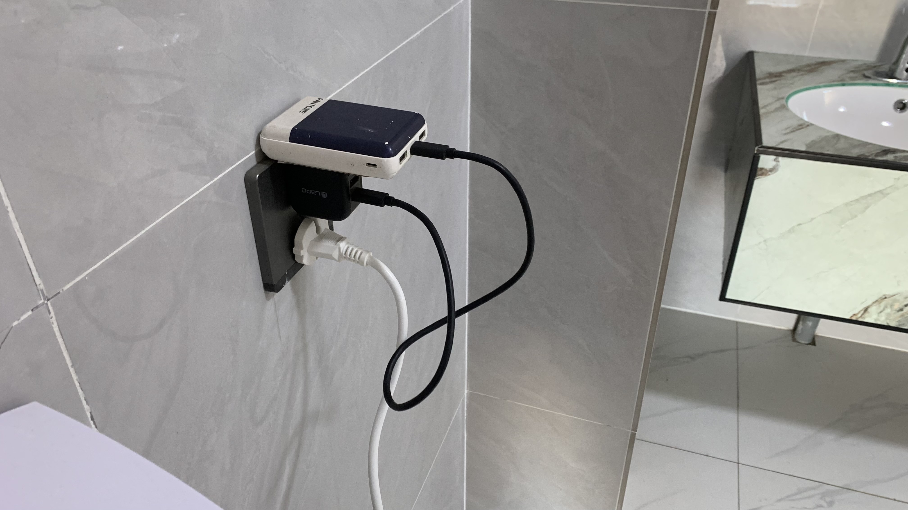
走到廁所發現有閒置插頭，於是拿出充電器充電。
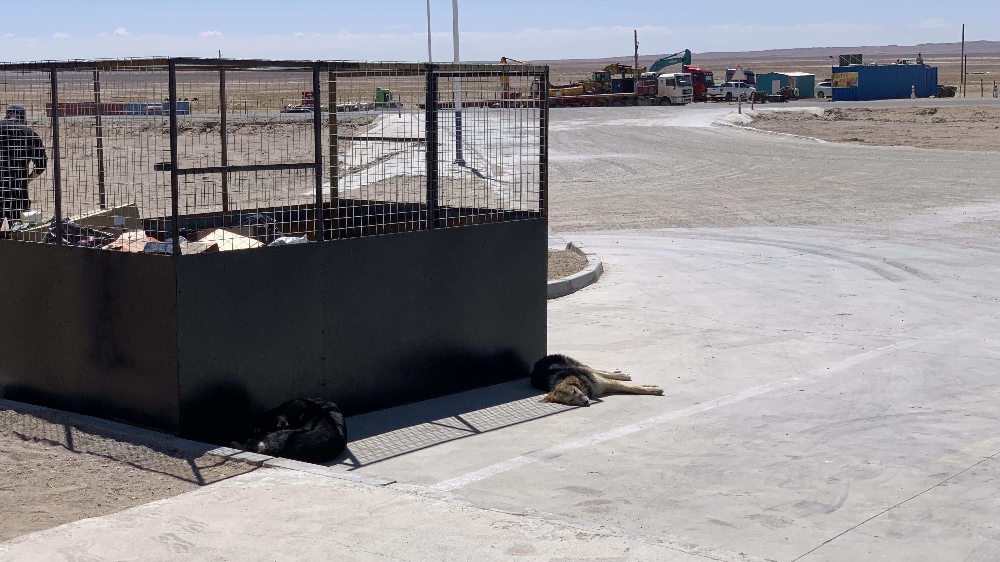
坐在外面等待的時間實在太熱，連傳說中很兇的狗都趴在地上不動。雖想躲進室內，又不放心充電器自己在這。還是進去買杯咖啡詢問店員可否讓我充電吧，怎麼說也是比較光明正大。
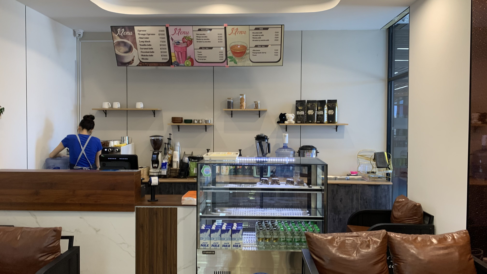
本以為這種複合式經營的咖啡會像前天的加油站一樣使用機器粉包，沒想到店員竟然認真的做起拿鐵。詢問後果真可以充電，不客氣地把手機和行動電源都插上。
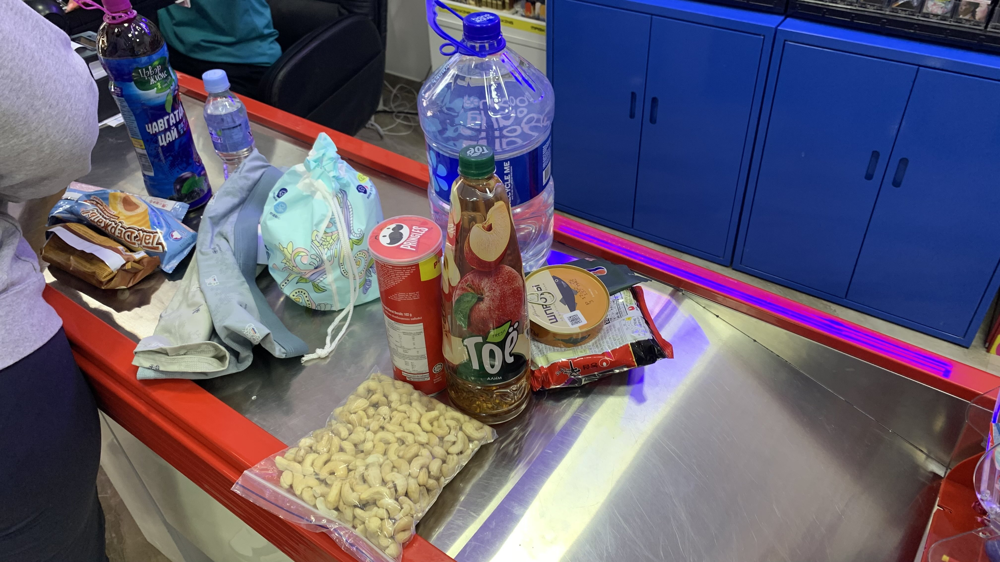
下午兩點，該是面對烈日的時候。買了2.5天的食物和水源，有一大袋腰果、沙丁魚罐頭、品客、辛拉麵和蘋果汁，藉此做好心理建設。
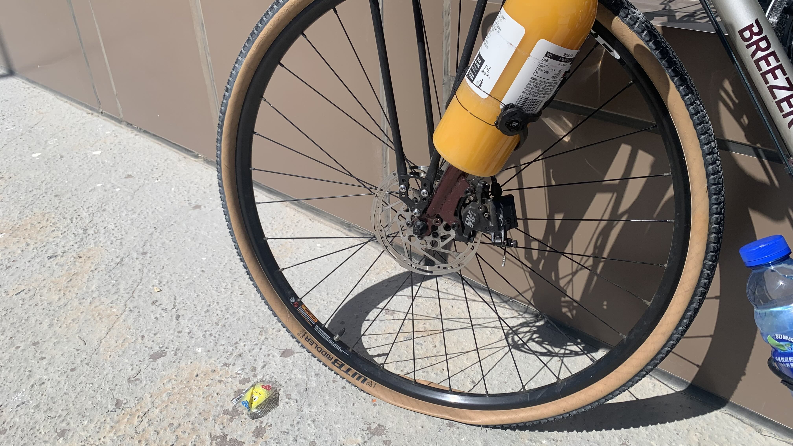
走到二十三號身邊，蹲下來替水壺裝水時發現前輪又沒氣了⋯⋯坐在大太陽底下，絕望地卸下所有行李。再次仔細檢查外胎、輪框，確認沒有夾帶任何碎片或尖銳物，再次嘗試塞進新的內胎。
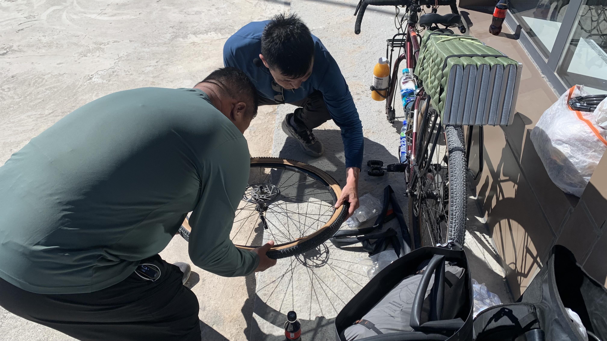
正當我手忙腳亂在行李邊噴汗時，走來兩個大哥，直接一人一隻手把輪胎拿過去，兩人不發一語開始塞內胎、裝外胎，動作熟練貌似自行車行老闆。打氣機過熱停止運作後，大哥拆下備用的小隻打氣筒開始打氣，旁邊開始聚集一些圍觀的人。兩位大哥合作無間，藍衣服大哥打完氣後把輪胎交給我，立刻回頭喝了一大口可樂。我對他倆感謝鞠躬，他們看了我一眼，一句話也沒說就上車走了。
此時已是下午四點，收拾了散落一地的行李，等了十分鐘確認輪胎沒有漏氣後繼續往賽音山達前進。
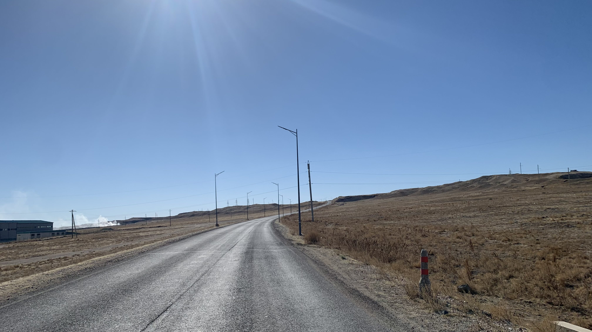
翻過這個山頭就是第二個城市了。
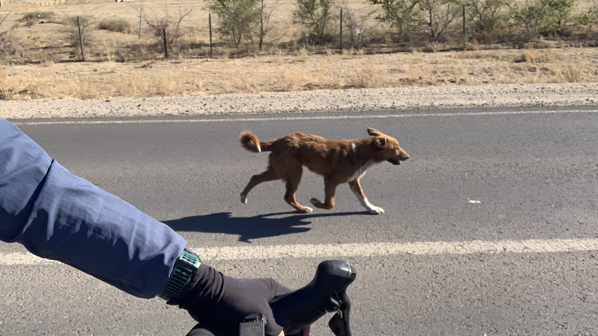
拍上一張照片的當下突然衝出一隻黃狗，因為各種蒙古狗很兇的傳聞，一直不敢看他。但是他沒有對我吼叫，只是默默跟在旁邊，陪我一起爬坡。不小心超越我時，會放慢速度繞到我後面繼續跟著。坡太陡踩到面目猙獰時，他會搖著尾巴湊近腳邊，叫兩聲鼓勵我。到了坡頂以為他會回家，沒想到竟跟著一起下坡。自行車滾太快，一度追不上我，在後面叫了兩聲。後方車輛按喇叭時擔心地頻頻回頭，只好捏著煞車慢慢往下滑，最後一人一狗一起進城。
什麼意思呢？迎賓禮嗎？為什麼我要等他呢？短短幾分鐘，甚至興起跟他一起旅行應該很不錯的念頭，連動物檢疫流程都在腦中跑了一遍。
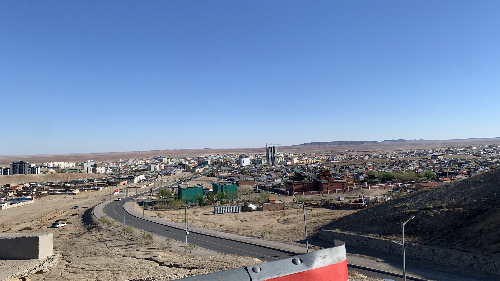
進城後小黃狗似乎找到朋友，在某個街角失去蹤影。而我為了找住處在城裡繞了兩小時。每間旅館都開價200000左右，約莫台幣一千七百多。比網路上查到的價格多了一倍。有間旅館牆上貼著單人房10萬，但是仍對我開了20萬。最後一間則是當地人跟我推薦的，說房價只要8-10萬，推著車上山，櫃檯仍開價20萬。
和中國遇到用殷勤微笑先發制人，表現出與二十三號站在一起的表象手法不同，此處櫃檯人員臉上都寫著「愛住不住隨你」的表情，相當灑脫。
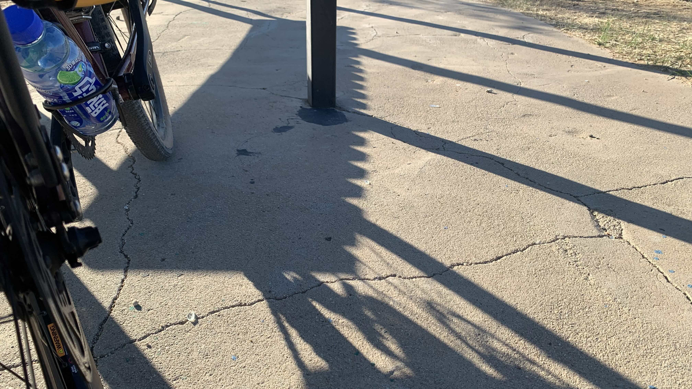
坐在公園思考了一下露宿的可能性，低頭看到二十三號的輪胎旁邊有一片碎玻璃，碎玻璃後面又有第二片、第三片、第四片，一直延伸到看不見的遠方。
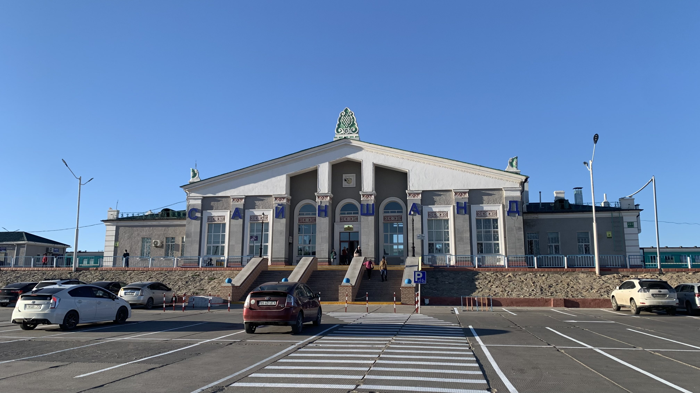
轉念一想，上一次爆胎睡在丸尾車站，那麼今天就往車站前進吧。
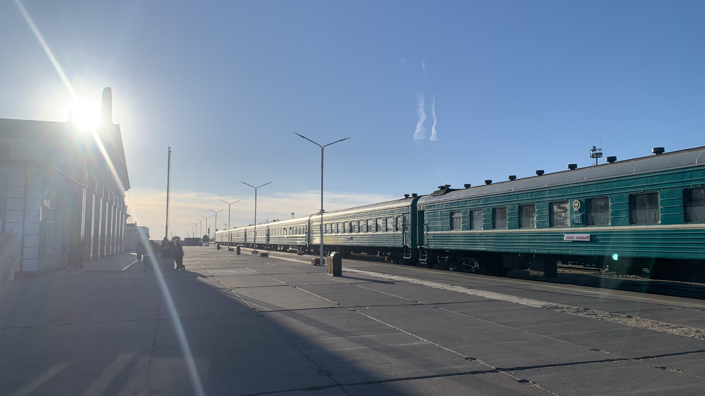
時間已是晚上七點，月台上停著長長的綠皮火車，似乎所有人都是準備搭上這班車的。不知道大廳能不能睡覺，先厚臉皮地把車牽進去。
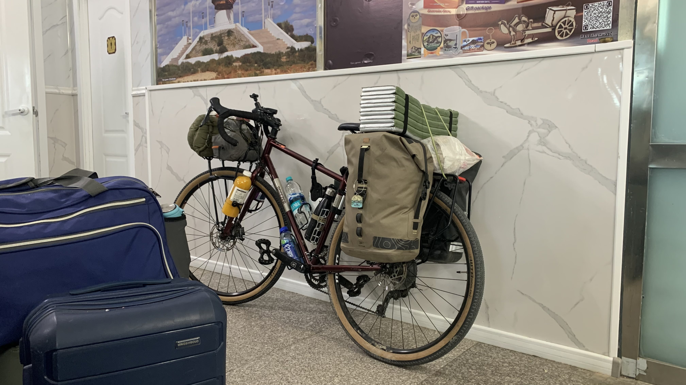
先在售票處將車靠在牆邊，融入乘客行李假裝等待。
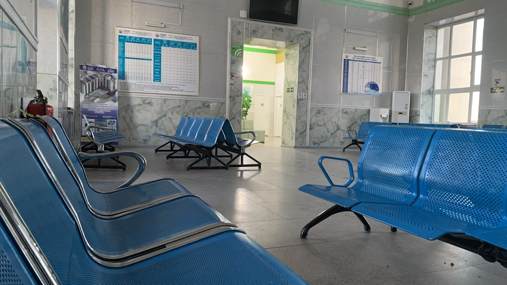
所有乘客都上車了，只好轉移陣地到大廳角落。好想睡覺。明明只騎了三十公里，為什麼這麼累？突然有點想吐，今天10點吃飯後就沒再進食，趕緊掏出下午買的腰果啃碎吞下。後悔下午意志不堅，選擇了進城這條路。若是往公路方向繼續走，應該已經躺在帳篷裡攤開羽絨睡袋睡覺了。
晚上八點半，警察先生收到站務員的耳語，走來問我是搭車的人嗎？剛剛看我在吃東西（做出手拿腰果放到嘴裡啃食的動作）。我說是騎自行車，找不到旅館，想在這裡睡覺。他點頭說沒問題。說完掏出手機用翻譯告訴我：「這裡有小偷，要小心車上的東西。」說著往我後方幾個提著黑色大布袋的男子看了幾眼。把二十三號移到監視器下方的角落放好，繼續啃腰果。那些人果然沒有等車來，在大廳坐了一下就走了。倒是我一進大廳就立刻上前搭話的年輕男子在人群散後突然又出現，直接坐到我對面，看著二十三號掛的馬鞍袋和我手上的包包，一直和我說著聽不懂的話。
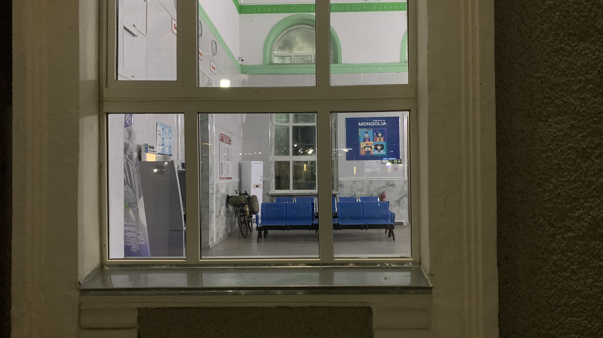
想必剛剛站務員是要警察過來關切吧，出門欣賞車站外觀，從玻璃窗看到站務員走進大廳，看到二十三號孤身一人，立刻跑出來張望。看到我在外面盯著窗戶，就又走回自己的工作站。
我發現有一派蒙古人好像不太說話，也看不出他們的眼神。下午幫我裝輪胎的大哥、路上給我第一瓶水的大哥，剛剛的站務員，都是面無表情讀不出任何情緒，只留下善舉就離開。
今日花費： 蘿蔔汁 2500、小刀 8500、咖啡 10000、食物和飲水 66000元